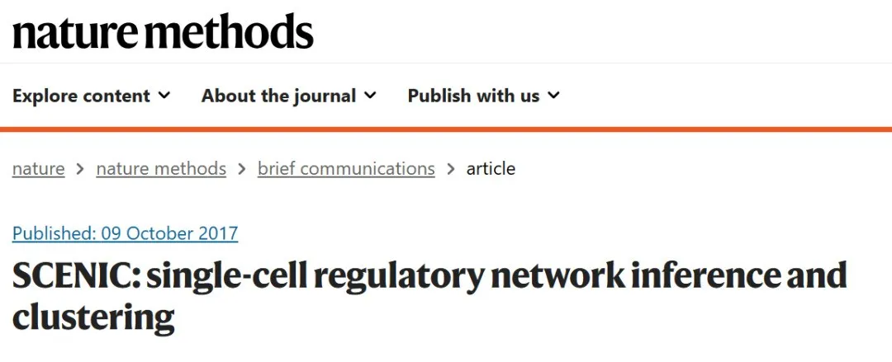
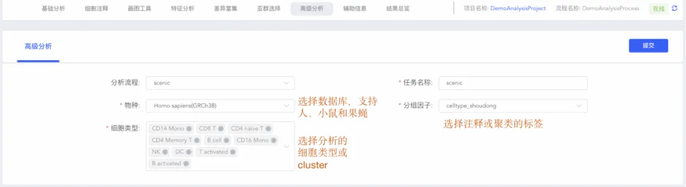
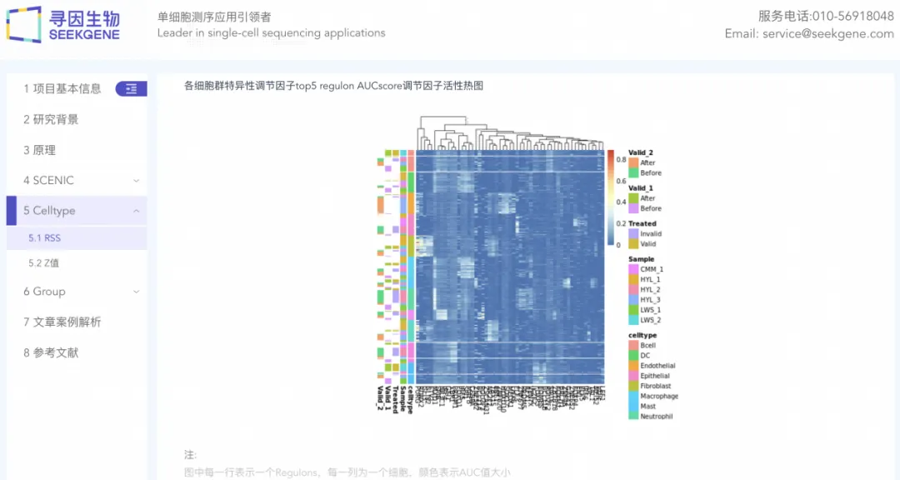
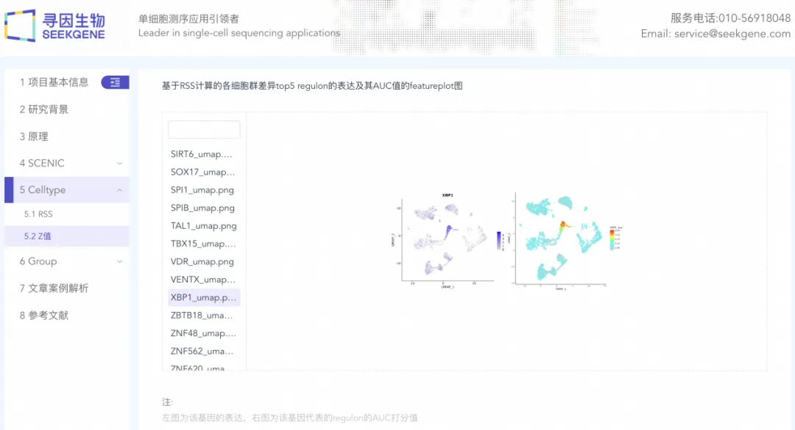
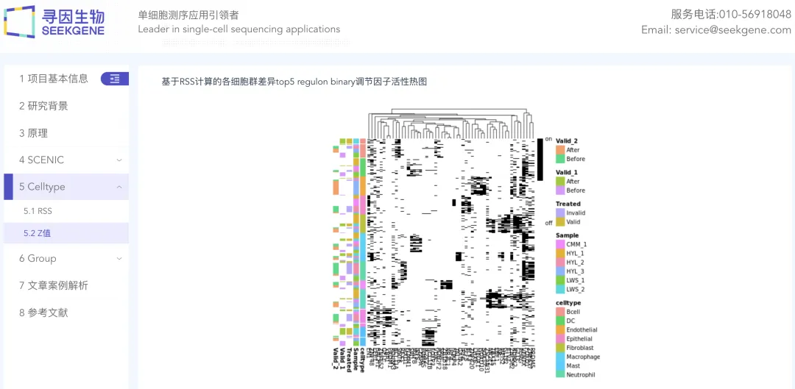

零代码单细胞| 转录因子调控
原文：https://mp.weixin.qq.com/s?__biz=MzAwMzIzOTk5OQ==&mid=2247510401&idx=7&sn=4f043a89d11e41aca4195908cc0ee842&chksm=9b3cd0d1ac4b59c773eb533b55c12de02df05e285b3de93467e3d953d92d19590f3e0dcc834f#rd 合集：单细胞云平台
导语 .
单细胞转录调控分析可以帮助我们识别细胞内的转录调控网络，从而深入挖掘细胞异质性背后的生物学意义，为疾病的诊断、治疗以及发育分化的研究提供基础。但是内存溢出、结果可视化操作难、以及多物种数据库下载和切换繁琐 等层出不穷的问题是否令您困扰？SeekSoul Online单细胞数据分析云平台提供了一键式的转录调控分析解决方案， 您只需设置分析参数，即可轻松获取细胞内的转录调控网络活性和细胞状态结果。此外，云平台还提供结构化的结果解读报告 ，更是您理解和解释数据分析结果的好帮手！
云平台访问链接：https://seeksoul.online/t_static/Biomamba/Biomamba.html
各位同学需要联系您的专属在线客服，获取demo数据后，进行操作学习。

第七讲：转录因子分析，云平台找“开关”
精华复现
在单细胞生信分析中，SCENIC （Single-Cell Enrichment for Integrated Omics Analysis）是一种基于转录因子与靶基因的共表达分析工具，可以用于重建基因调控网络并识别细胞状态。

生信云平台为您提供一站式SCENIC转录因子分析服务，助力您轻松驾驭SCENIC分析。 您只需选择物种、细胞类型等极少参数，即可快速提交任务**，分析进程、**结果报告方便查询， 让您随时随地都能了解到分析的进展和结果。
第一步：如何提交任务呢？

第二步：结果报告有什么？
1、调控子特异性分析
RSS热图展示了调控子（TF及其靶基因集合）在每种细胞类型中的特异性强弱（AUC值）。可筛选出调控强度显著、发挥核心作用的TFs，从而深入探讨其致病或生长发育等机制。

2、调控子强度可视化
转录因子表达和调控子强度（AUC值）featureplot图可以直观地展示转录因子与调控子在特定细胞类型中的表达情况，探讨特定细胞的功能及转录状态。

3、调控子开放性分析
热图展示了每种细胞类型中调控子的开放性，其中黑色表示该调控子开放，即处于激活状态，具有调控作用，可以很方便地找到不同细胞类型中特异性的转录调控子。

通过云平台，两步即可完成SCENIC转录因子分析，生信基础薄弱和代码复杂都不是问题。 同时，清晰的结果报告让您有更多的时间进行结果分析，让您更懂您的结果。我们相信，生信云平台将为您的单细胞研究带来更多洞见和突破！